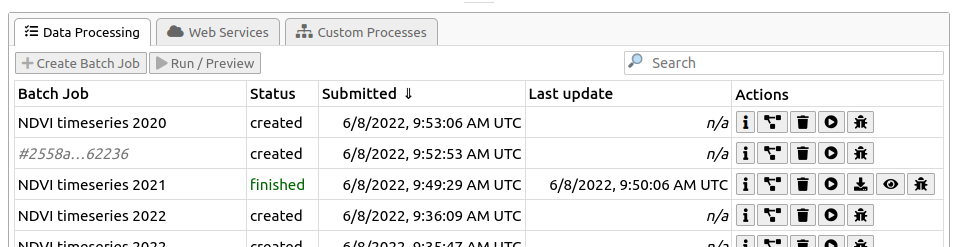
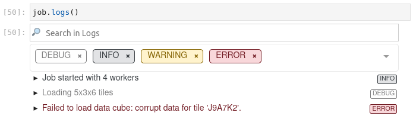

Batch Jobs¶
Most of the simple, basic openEO usage examples show synchronous downloading of results: you submit a process graph with a (HTTP POST) request and receive the result as direct response of that same request. This only works properly if the processing doesn’t take too long (order of seconds, or a couple of minutes at most).
For the heavier work (larger regions of interest, larger time series, more intensive processing, …) you have to use batch jobs, which are supported in the openEO API through separate HTTP requests, corresponding to these steps:
you create a job (providing a process graph and some other metadata like title, description, …)
you start the job
you wait for the job to finish, periodically polling its status
when the job finished successfully: get the listing of result assets
you download the result assets (or use them in an other way)
Tip
This documentation mainly discusses how to programmatically create and interact with batch job using the openEO Python client library. The openEO API however does not enforce usage of the same tool for each step in the batch job life cycle.
For example: if you prefer a graphical, web-based interactive environment to manage and monitor your batch jobs, feel free to switch to an openEO web editor like editor.openeo.org or editor.openeo.cloud at any time. After logging in with the same account you use in your Python scripts, you should see your batch jobs listed under the “Data Processing” tab:
With the “action” buttons on the right, you can for example inspect batch job details, start/stop/delete jobs, download their results, get batch job logs, etc.
Create a batch job¶
In the openEO Python Client Library, if you have a (raster) data cube, you can easily
create a batch job with the DataCube.create_job() method.
It’s important to specify in what format the result should be stored,
which can be done with an explicit DataCube.save_result() call before creating the job:
cube = connection.load_collection(...)
...
# Store raster data as GeoTIFF files
cube = cube.save_result(format="GTiff")
job = cube.create_job()
or directly in job.create_job():
cube = connection.load_collection(...)
...
job = cube.create_job(out_format="GTiff)
While not necessary, it is also recommended to give your batch job a descriptive title so it’s easier to identify in your job listing, e.g.:
job = cube.create_job(title="NDVI timeseries 2022")
Batch job object¶
The job object returned by create_job()
is a BatchJob object.
It is basically a client-side reference to a batch job that exists on the back-end
and allows to interact with that batch job
(see the BatchJob API docs for
available methods).
Note
The BatchJob class originally had
the more cryptic name RESTJob,
which is still available as legacy alias,
but BatchJob is (available and) recommended since version 0.11.0.
A batch job on a back-end is fully identified by its
job_id:
>>> job.job_id
'd5b8b8f2-74ce-4c2e-b06d-bff6f9b14b8d'
Reconnecting to a batch job¶
Depending on your situation or use case: make sure to properly take note of the batch job id. It allows you to “reconnect” to your job on the back-end, even if it was created at another time, by another script/notebook or even with another openEO client.
Given a back-end connection and the batch job id,
use Connection.job()
to create a BatchJob object for an existing batch job:
job_id = "5d806224-fe79-4a54-be04-90757893795b"
job = connection.job(job_id)
Jupyter integration¶
BatchJob objects have basic Jupyter notebook integration.
Put your BatchJob object as last statement
in a notebook cell and you get an overview of your batch jobs,
including job id, status, title and even process graph visualization:
List your batch jobs¶
You can list your batch jobs on the back-end with
Connection.list_jobs(), which returns a list of job metadata:
>>> connection.list_jobs()
[{'title': 'NDVI timeseries 2022', 'status': 'created', 'id': 'd5b8b8f2-74ce-4c2e-b06d-bff6f9b14b8d', 'created': '2022-06-08T08:58:11Z'},
{'title': 'NDVI timeseries 2021', 'status': 'finished', 'id': '4e720e70-88bd-40bc-92db-a366985ebd67', 'created': '2022-06-04T14:46:06Z'},
...
The listing returned by Connection.list_jobs()
has Jupyter notebook integration:
Run a batch job¶
Starting a batch job is pretty straightforward with the
start() method:
job.start()
If this didn’t raise any errors or exceptions your job should now have started (status “running”) or be queued for processing (status “queued”).
Wait for a batch job to finish¶
A batch job typically takes some time to finish,
and you can check its status with the status() method:
>>> job.status()
"running"
The possible batch job status values, defined by the openEO API, are “created”, “queued”, “running”, “canceled”, “finished” and “error”.
Usually, you can only reliably get results from your job, as discussed in Download batch job results, when it reaches status “finished”.
Create, start and wait in one go¶
You could, depending on your situation, manually check your job’s status periodically or set up a polling loop system to keep an eye on your job. The openEO Python client library also provides helpers to do that for you.
Working from an existing BatchJob instance
If you have a batch job that is already created as shown above, you can use the
job.start_and_wait()method to start it and periodically poll its status until it reaches status “finished” (or fails with status “error”). Along the way it will print some progress messages.>>> job.start_and_wait() 0:00:00 Job 'b0e8adcf-087f-41de-afe6-b3c0ea88ff38': send 'start' 0:00:36 Job 'b0e8adcf-087f-41de-afe6-b3c0ea88ff38': queued (progress N/A) 0:01:35 Job 'b0e8adcf-087f-41de-afe6-b3c0ea88ff38': queued (progress N/A) 0:02:19 Job 'b0e8adcf-087f-41de-afe6-b3c0ea88ff38': running (progress N/A) 0:02:50 Job 'b0e8adcf-087f-41de-afe6-b3c0ea88ff38': running (progress N/A) 0:03:28 Job 'b0e8adcf-087f-41de-afe6-b3c0ea88ff38': finished (progress N/A)
Working from a DataCube instance
If you didn’t create the batch job yet from a given
DataCubeyou can do the job creation, starting and waiting in one go withcube.execute_batch():>>> job = cube.execute_batch() 0:00:00 Job 'f9f4e3d3-bc13-441b-b76a-b7bfd3b59669': send 'start' 0:00:23 Job 'f9f4e3d3-bc13-441b-b76a-b7bfd3b59669': queued (progress N/A) ...Note that
cube.execute_batch()returns aBatchJobinstance pointing to the newly created batch job.
Tip
You can fine-tune the details of the polling loop (the poll frequency,
how the progress is printed, …).
See job.start_and_wait()
or cube.execute_batch()
for more information.
Batch job logs¶
Batch jobs in openEO have logs to help with monitoring and debugging batch jobs.
The back-end typically uses this to dump information during data processing
that may be relevant for the user (e.g. warnings, resource stats, …).
Moreover, openEO processes like inspect allow users to log their own information.
Batch job logs can be fetched with job.logs()
>>> job.logs()
[{'id': 'log001', 'level': 'info', 'message': 'Job started with 4 workers'},
{'id': 'log002', 'level': 'debug', 'message': 'Loading 5x3x6 tiles'},
{'id': 'log003', 'level': 'error', 'message': "Failed to load data cube: corrupt data for tile 'J9A7K2'."},
...
In a Jupyter notebook environment, this also comes with Jupyter integration:
Automatic batch job log printing¶
When using
job.start_and_wait()
or cube.execute_batch()
to run a batch job and it fails,
the openEO Python client library will print (by default)
the batch job’s error logs and instructions to help with further investigation:
>>> job.start_and_wait()
0:00:00 Job '68caccff-54ee-470f-abaa-559ed2d4e53c': send 'start'
0:00:01 Job '68caccff-54ee-470f-abaa-559ed2d4e53c': running (progress N/A)
0:00:07 Job '68caccff-54ee-470f-abaa-559ed2d4e53c': error (progress N/A)
Your batch job '68caccff-54ee-470f-abaa-559ed2d4e53c' failed.
Logs can be inspected in an openEO (web) editor
or with `connection.job('68caccff-54ee-470f-abaa-559ed2d4e53c').logs()`.
Printing logs:
[{'id': 'log001', 'level': 'info', 'message': 'Job started with 4 workers'},
{'id': 'log002', 'level': 'debug', 'message': 'Loading 5x3x6 tiles'},
{'id': 'log003', 'level': 'error', 'message': "Failed to load data cube: corrupt data for tile 'J9A7K2'."}]
Download batch job results¶
Once a batch job is finished you can get a handle to the results
(which can be a single file or multiple files) and metadata
with get_results():
>>> results = job.get_results()
>>> results
<JobResults for job '57da31da-7fd4-463a-9d7d-c9c51646b6a4'>
The result metadata describes the spatio-temporal properties of the result and is in fact a valid STAC item:
>>> results.get_metadata()
{
'bbox': [3.5, 51.0, 3.6, 51.1],
'geometry': {'coordinates': [[[3.5, 51.0], [3.5, 51.1], [3.6, 51.1], [3.6, 51.0], [3.5, 51.0]]], 'type': 'Polygon'},
'assets': {
'res001.tiff': {
'href': 'https://openeo.example/download/432f3b3ef3a.tiff',
'type': 'image/tiff; application=geotiff',
...
'res002.tiff': {
...
Download all assets¶
In the general case, when you have one or more result files (also called “assets”),
the easiest option to download them is
using download_files() (plural)
where you just specify a download folder
(otherwise the current working directory will be used by default):
results.download_files("data/out")
The resulting files will be named as they are advertised in the results metadata
(e.g. res001.tiff and res002.tiff in case of the metadata example above).
Download single asset¶
If you know that there is just a single result file, you can also download it directly with
download_file() (singular) with the desired file name:
results.download_file("data/out/result.tiff")
This will fail however if there are multiple assets in the job result
(like in the metadata example above).
In that case you can still download a single by specifying which one you
want to download with the name argument:
results.download_file("data/out/result.tiff", name="res002.tiff")
Fine-grained asset downloads¶
If you need a bit more control over which asset to download and how,
you can iterate over the result assets explicitly
and download these ResultAsset instances
with download(), like this:
for asset in results.get_assets():
if asset.metadata["type"].startswith("image/tiff"):
asset.download("data/out/result-v2-" + asset.name)
Directly load batch job results¶
If you want to skip downloading an asset to disk, you can also load it directly.
For example, load a JSON asset with load_json():
>>> asset.metadata
{"type": "application/json", "href": "https://openeo.example/download/432f3b3ef3a.json"}
>>> data = asset.load_json()
>>> data
{"2021-02-24T10:59:23Z": [[3, 2, 5], [3, 4, 5]], ....}